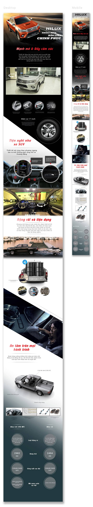

Landing page design for Toyota Nha Trang Dealership
This was a freelance project which I designed a responsive landing page to introduce the new Toyota Hilux model for the Toyota Nha Trang Dealership. They requested a bold and dynamic design which highlights speed and fearless movement.
I used thick and italic fonts to convey the movement. Dark and light backgrounds in different sections to create dynamic and strong contrast. Lines and shapes were also use to express the daring characteristics of the new model.
Duration: 2 weeks
